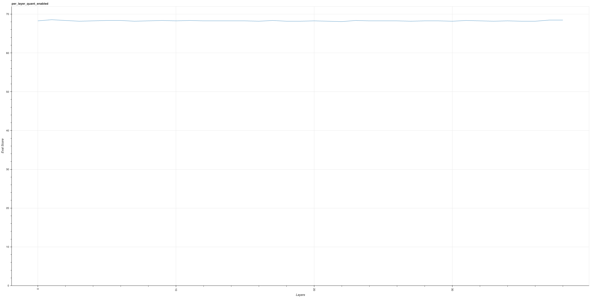
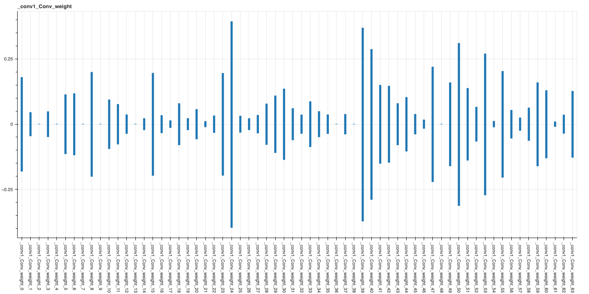
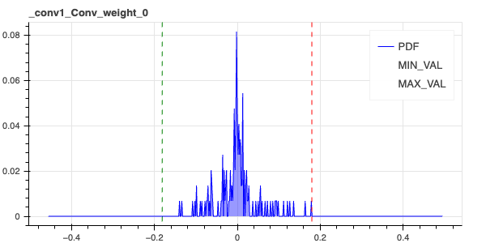
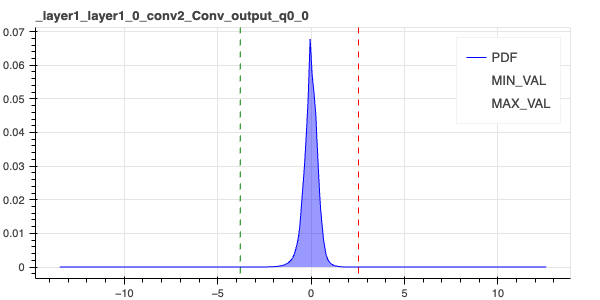
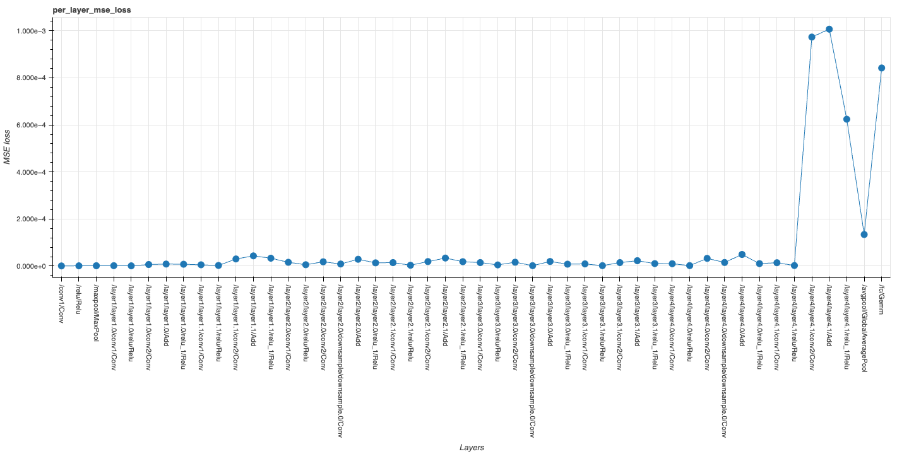

Quant Analyzer¶
This notebook showcases a working code example of how to use AIMET to apply Quant Analyzer. Quant Analyzer is a feature which performs various analyses on a model to understand how each layer in the model responds to quantization.
Overall flow¶
This notebook covers the following
Instantiate the example evaluation pipeline
Load the FP32 model
Apply QuantAnalyzer to the model
QuantAnalyzer performs the following analysis:
model sensitivity to weight and activation quantization
per layer sensitivity analysis
per layer encoding (min - max range)
per layer quantizer historgram analysis and
per layer MSE analysis
What this notebook is not¶
This notebook is not designed to show state-of-the-art results.
For example, it uses a relatively quantization-friendly model like Resnet18.
Also, some optimization parameters are deliberately chosen to have the notebook execute more quickly.
Dataset¶
This notebook relies on the ImageNet dataset for the task of image classification. If you already have a version of the dataset readily available, please use that. Else, please download the dataset from appropriate location (e.g. https://image-net.org/challenges/LSVRC/2012/index.php#).
Note1: The ImageNet dataset typically has the following characteristics and the dataloader provided in this example notebook rely on these
Subfolders ‘train’ for the training samples and ‘val’ for the validation samples. Please see the pytorch dataset description for more details.
A subdirectory per class, and a file per each image sample
Note2: To speed up the execution of this notebook, you may use a reduced subset of the ImageNet dataset. E.g. the entire ILSVRC2012 dataset has 1000 classes, 1000 training samples per class and 50 validation samples per class. But for the purpose of running this notebook, you could perhaps reduce the dataset to say 2 samples per class. This exercise is left upto the reader and is not necessary.
Edit the cell below and specify the directory where the downloaded ImageNet dataset is saved.
[ ]:
DATASET_DIR = "./imagenet_dataset" # change directory path to save dataset at a different location
!wget -P "{DATASET_DIR}" https://image-net.org/data/ILSVRC/2012/ILSVRC2012_devkit_t12.tar.gz
!wget -P "{DATASET_DIR}" https://image-net.org/data/ILSVRC/2012/ILSVRC2012_img_val.tar
[9]:
DATASET_DIR = "/local/mnt/workspace/work/repo/aimet/aimet/../imagenet_dataset/"
[ ]:
import sys
# Add path to AIMET repo i.e. parent of Examples notebook
# This will enable to import all utilities required for this notebook
# Update path to aimet repo here
aimet_repo_path = "<path_to_aimet_repo>"
sys.path.insert(0, aimet_repo_path)
import torch
from Examples.common import image_net_config
from Examples.onnx.utils.image_net_evaluator import ImageNetEvaluator
from Examples.torch.utils.image_net_data_loader import ImageNetDataLoader
1. Example evaluation and training pipeline¶
The following is an example training and validation loop for this image classification task.
Does AIMET have any limitations on how the training, validation pipeline is written?
Not really. We will see later that AIMET will modify the user’s model to create a QuantizationSim model which is still an ONNX model. This QuantizationSim model can be used in place of the original model when doing inference or training.
Does AIMET put any limitation on the interface of the evaluate() or train() methods?
Not really. You should be able to use your existing evaluate and train routines as-is.
[11]:
# Reduce number of images for speed up
image_net_config.dataset["val_images_len"] = 1000
class ImageNetDataPipeline:
@staticmethod
def get_val_dataloader(get_unlabeled_dataloader:bool = False) -> torch.utils.data.DataLoader:
"""
Instantiates a validation dataloader for ImageNet dataset and returns it
"""
collate_fn = None
if get_unlabeled_dataloader:
collate_fn = lambda batch : (torch.stack([data[0] for data in batch]).numpy())
data_loader = ImageNetDataLoader(DATASET_DIR,
image_size=image_net_config.dataset['image_size'],
batch_size=image_net_config.evaluation['batch_size'],
is_training=False,
num_workers=image_net_config.evaluation['num_workers'],
collate_fn=collate_fn).data_loader
return data_loader
@staticmethod
def evaluate(model: torch.nn.Module, use_cuda: bool) -> float:
"""
Given a torch model, evaluates its Top-1 accuracy on the dataset
:param model: the model to evaluate
:param use_cuda: whether or not the GPU should be used.
"""
evaluator = ImageNetEvaluator(DATASET_DIR, image_size=image_net_config.dataset['image_size'],
batch_size=image_net_config.evaluation['batch_size'],
num_workers=image_net_config.evaluation['num_workers'],
num_val_samples_per_class=1,
)
return evaluator.evaluate(model, iterations=None)
2. Load the model¶
For this example notebook, we are going to load a pretrained resnet18 model from torchvision. Similarly, you can load any pretrained PyTorch model instead.
[ ]:
import onnx
from torchvision.models import resnet18
model = resnet18(pretrained=True)
onnx_model_path = "./resnet.onnx"
torch.onnx.export(model,
torch.randn(1, 3, 224, 224),
onnx_model_path,
input_names=['input'],
output_names=['output'],
dynamic_axes={
"input" : { 0 : "batch_size"},
"output" : { 0 : "batch_size"}
},
dynamo=False,
)
onnx_model = onnx.load_model(onnx_model_path)
3. Apply QuantAnalyzer to the model¶
QuantAnalyzer requires two functions to be defined by the user for passing data through the model:
Forward pass callback
One function will be used to pass representative data through a quantized version of the model to calibrate quantization parameters. This function should be fairly simple - use the existing train or validation data loader to extract some samples and pass them to the model. We don’t need to compute any loss metrics, so we can just ignore the model output.
The function must take two arguments, the first of which will be the model to run the forward pass on. The second argument can be anything additional which the function requires to run, and can be in the form of a single item or a tuple of items.
If no additional argument is needed, the user can specify a dummy “_” parameter for the function.
A few pointers regarding the forward pass data samples:
In practice, we need a very small percentage of the overall data samples for computing encodings. For example, the training dataset for ImageNet has 1M samples. For computing encodings we only need 500 to 1000 samples.
It may be beneficial if the samples used for computing encoding are well distributed. It’s not necessary that all classes need to be covered since we are only looking at the range of values at every layer activation. However, we definitely want to avoid an extreme scenario like all ‘dark’ or ‘light’ samples are used - e.g. only using pictures captured at night might not give ideal results.
The following shows an example of a routine that passes unlabeled samples through the model for computing encodings. This routine can be written in many ways; this is just an example. This function only requires unlabeled data as no loss or other evaluation metric is needed.
[13]:
def forward_callback(session, data_loader):
batch_size = data_loader.batch_size
input_name = session.get_inputs()[0].name
batch_cntr = 0
for input_data, _ in data_loader:
inputs_batch = input_data.numpy()
session.run(None, {input_name : inputs_batch})
batch_cntr += 1
# Use 10000 samples for computing initial scale/offset
if (batch_cntr * batch_size) > 1000:
break
In order to pass this function to QuantAnalyzer, we need to wrap it in a CallbackFunc object, as shown below. The CallbackFunc takes two arguments: the callback function itself, and the inputs to pass into the callback function.
[14]:
from aimet_common.utils import CallbackFunc
from aimet_onnx.quant_analyzer import QuantAnalyzer
data_loader = ImageNetDataPipeline.get_val_dataloader()
forward_pass_callback = CallbackFunc(forward_callback, data_loader)
Evaluation callback
The second function will be used to evaluate the model, and needs to return an accuracy metric. In here, the user should pass enough amount of data through the model which they would like when evaluating their model for accuracy.
Like the forward pass callback, this function also must take exactly two arguments: the model to evaluate, and any additional argument needed for the function to work. The second argument can be a tuple of items in case multiple items are needed.
We will be using the ImageNetDataPipeline’s evaluate defined above for this purpose. Like the forward pass callback, we need to wrap the evaluation callback in a CallbackFunc object as well.
[15]:
eval_callback = CallbackFunc(ImageNetDataPipeline.evaluate)
QuantAnalyzer also requires a dummy input to the model. This dummy input does not need to be representative of the dataset. All that matters is that the input shape is correct for the model to run on.
[16]:
import numpy as np
dummy_input = {"input": np.random.randn(1, 3, 224, 224).astype(np.float32)} # Shape for each ImageNet sample is (3 channels) x (224 height) x (224 width)
We are now ready to apply QuantAnalyzer.
[ ]:
quant_analyzer = QuantAnalyzer(model=onnx_model,
dummy_input=dummy_input,
forward_pass_callback=forward_pass_callback,
eval_callback=eval_callback)
Enabling MSE loss per layer analysis
An optional analysis step in QuantAnalyzer calculates the MSE loss per layer in the model, comparing the layer outputs from the original FP32 model vs. a quantized model. To perform this step, the user needs to also provide an unlabeled DataLoader to QuantAnalyzer.
We will demonstrate this step by using the ImageNetDataLoader imported above.
[18]:
unlabeled_data_loader = ImageNetDataPipeline.get_val_dataloader(get_unlabeled_dataloader=True)
quant_analyzer.enable_per_layer_mse_loss(unlabeled_data_loader, num_batches=16)
Finally, to start the analyzer, we call .analyze().
A few of the parameters are explained here:
quant_scheme:
We set this to “post_training_tf_enhanced” With this choice of quant scheme, AIMET will use the TF Enhanced quant scheme to initialize the quantization parameters like scale/offset.
default_activation_bw: Setting this to 8 means that we are asking AIMET to perform all activation quantizations in the model using integer 8-bit precision.
default_param_bw: Setting this to 8 means that we are asking AIMET to perform all parameter quantizations in the model using integer 8-bit precision.
There are other parameters that are set to default values in this example. Please check the AIMET API documentation of QuantizationSimModel to see reference documentation for all the parameters.
When you call the analyze method, the following analyses are run:
Compare fp32 accuracy, accuracy with only parameters quantized, and accuracy with only activations quantized
For each layer, track the model accuracy when quantization for all other layers is disabled (enabling quantization for only one layer in the model at a time)
For each layer, track the model accuracy when quantization for all other layers is enabled (disabling quantization for only one layer in the model at a time)
Track the minimum and maximum encoding parameters calculated by each quantizer in the model as a result of forward passes through the model with representative data
When the TF Enhanced quantization scheme is used, track the histogram of tensor ranges seen by each quantizer in the model as a result of forward passes through the model with representative data
If enabled, track the MSE loss seen at each layer by comparing layer outputs of the original fp32 model vs. a quantized model
[ ]:
from aimet_common.defs import QuantScheme
quant_analyzer.analyze(quant_scheme=QuantScheme.post_training_tf_enhanced,
default_param_bw=8,
default_activation_bw=8,
config_file="htp_v75",
results_dir="./resnet18_quantsim_analysis/")
AIMET will also output .html plots and json files where appropriate for each analysis to help visualize the data.
The following output files will be produced, in a folder specified by the user: Output directory structure will be like below
results_dir
|-- per_layer_quant_enabled.html
|-- per_layer_quant_enabled.json
|-- per_layer_quant_disabled.html
|-- per_layer_quant_disabled.json
|-- min_max_ranges
| |-- activations.html
| |-- activations.json
| |-- weights.html
| +-- weights.json
|-- activations_pdf
| |-- name_{input/output}_{index_0}.html
| |-- name_{input/output}_{index_1}.html
| |-- ...
| +-- name_{input/output}_{index_N}.html
|-- weights_pdf
| |-- layer1
| | |-- param_name_{channel_index_0}.html
| | |-- param_name_{channel_index_1}.html
| | |-- ...
| | +-- param_name_{channel_index_N}.html
| |-- layer2
| | |-- param_name_{channel_index_0}.html
| | |-- param_name_{channel_index_1}.html
| | |-- ...
| | +-- param_name_{channel_index_N}.html
| |-- ...
| |-- layerN
| | |-- param_name_{channel_index_0}.html
| | |-- param_name_{channel_index_1}.html
| | |-- ...
| +-- +-- param_name_{channel_index_N}.html
|-- per_layer_mse_loss.html
+-- per_layer_mse_loss.json
Per-layer analysis by enabling/disabling quantization wrappers¶
per_layer_quant_enabled.html: A plot with layers on the x-axis and model accuracy on the y-axis, where each layer’s accuracy represents the model accuracy when all quantizers in the model are disabled except for that layer’s parameter and activation quantizers.
per_layer_quant_enabled.json: A json file containing the data shown in per_layer_quant_enabled.html, associating layer names with model accuracy.
per_layer_quant_disabled.html: A plot with layers on the x-axis and model accuracy on the y-axis, where each layer’s accuracy represents the model accuracy when all quantizers in the model are enabled except for that layer’s parameter and activation quantizers.
per_layer_quant_disabled.json: A json file containing the data shown in per_layer_quant_disabled.html, associating layer names with model accuracy.

Encoding min/max ranges¶
min_max_ranges: A folder containing the following sets of files:
activations.html: A plot with output activations on the x-axis and min-max values on the y-axis, where each output activation’s range represents the encoding min and max parameters computed during forward pass calibration (explained below).
activations.json: A json file containing the data shown in activations.html, associating layer names with min and max encoding values.
weights.html: A plot with parameter names on the x-axis and min-max values on the y-axis, where each parameter’s range represents the encoding min and max parameters computed during forward pass calibration.
weights.json: A json file containing the data shown in weights.html, associating parameter names with min and max encoding values.

PDF of statistics¶
(If TF Enhanced quant scheme is used) activations_pdf: A folder containing html files for each layer, plotting the histogram of tensor values seen for that layer’s output activation seen during forward pass calibration.
(If TF Enhanced quant scheme is used) weights_pdf: A folder containing sub folders for each layer with weights. Each layer’s folder contains html files for each parameter of that layer, with a histogram plot of tensor values seen for that parameter seen during forward pass calibration.


Per-layer MSE loss¶
(Optional, if per layer MSE loss is enabled) per_layer_mse_loss.html: A plot with layers on the x-axis and MSE loss on the y-axis, where each layer’s MSE loss represents the MSE seen comparing that layer’s outputs in the FP32 model vs. the quantized model.
(Optional, if per layer MSE loss is enabled) per_layer_mse_loss.json: A json file containing the data shown in per_layer_mse_loss.html, associating layer names with MSE loss.
